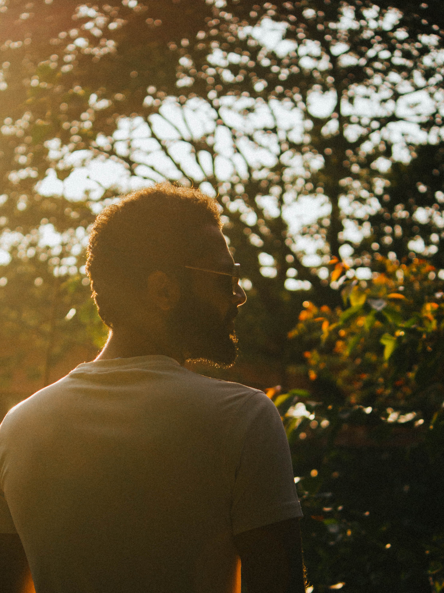
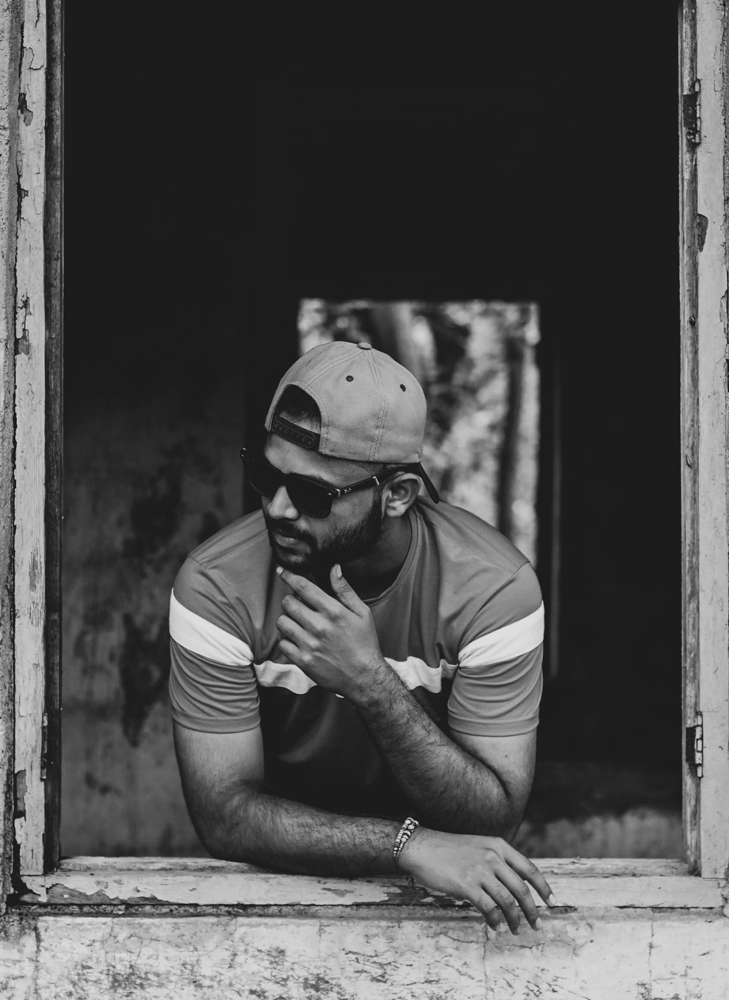

What’s the first thing that comes to your mind when you hear the word “Artist”? Is it an art form or someone making a drawing or portrait of someone, the carpenter doing something out of his skills and someone playing the nice and sweet piano? When I heard the sound “Artist” the first thing that came into my mind was someone pressing that shutter button on the SLR and snapping out the frames of the epic landscapes and having a good smile on a face and the satisfaction of getting the perfect shot.
But after all, what matters in our life is our life itself which eventually depends on what are you today and thinking about what we would become one day.
Hello there, I am Ayush Gunjal, and I have been a data enthusiast for my LinkedIn career and a photographer and cinematographer for my life and done engineering with a specialization in electronics and telecommunication.
We all know the story that always came into our mind and surroundings and very common that, there is a guy who was just born into the middle class or a poor family and wants to become an artist, and our society comes in between and doesn’t let them come up and then an artist finishes very badly in their life at some point and after some time they spend their life, they eventually realize that it's not going to work this way and thereafter he switch his job and took a risk and fight with the society and finally became what he wants to be in real life. The story ends with a nice and sweet ending, a happy ending.
Practically everyone has their responsibility for their family so you need to manage your responsibility along with your passion. Basically what I am trying to say is your primary concern should be your family and responsibilities. If you're doing some graduation or you're doing the job for an income source that helps your family, that is great. You just need to have patience inside you that you can do your artwork whenever you have an income source that is fully yours not someone else’s or your father's money I’ll say. Well, you say it or not art needs money to be created at some point not all art is created without money. Every step we have taken would affect the financial condition of our family and their mental health.
So where do we should enjoy our life? You have to enjoy every stage of your life and every moment it's not written that you will always get what you want in your life sacrifices should be made. so while doing the job you should have to do your art by taking leaves or on weekends or whenever you have time. Now people will say they getting crushed every day at the end of their job then my friend this artwork is not for you. Art is something that an artist doesn’t get tired of. We heard a lot of motivational stories, motivational stories everyone did the hard work at some point in their life. Hard work is not scrolling reels at night before sleep and getting up late in the morning, hard work is something in which you couldn’t even sleep we have not reached that level of hard work. As soon as you hit the bed you fall asleep, this is hard work. Sleep is optional in that case.
So you should do your job and along with that you can make art or do what you love there is no one to stop us because at this point we invested our own money to create the art we want and who knows at some point in your life your artwork becomes your primary income source. Just enjoy what you love by having patience and responsibility alongside. Don’t just spend life thinking about I don’t want to do this job or something. be happy with what you have and then do what you love. So basically you have to balance both art and responsibility together and balancing this thing is itself an art.
If you're still reading thank you for making it so far I am also an artist doing photography and cinematography learning something new every day and getting my education alongside. I am writing this article to express my feelings towards the artistic mind and it was my first article hope you love it thanks for being here At the end let me tell you what I think the artist is,
When you tell someone you are an artist or want to be an artist it's usually met with an eye roll a common cliché of not being able to pay the bills or make something that people will care about. What do you have to say, to share, to express, to imagine that’s not art, stick to something practical stick to something safe but that is not who we are so who are we let me tell you who we are, What’s the first thing that comes to your mind when you hear the word “Artist”. Is it an art form or someone making a drawing or portrait of someone, the carpenter doing something out of his skills and someone playing the nice and sweet piano? When I heard the sound “Artist” the first thing that came into my mind was someone pressing that shutter button on the SLR and snapping out the frames of the epic landscapes and having a good smile on a face and the satisfaction of getting the perfect shot. Exactly what you read when you decided to read this article